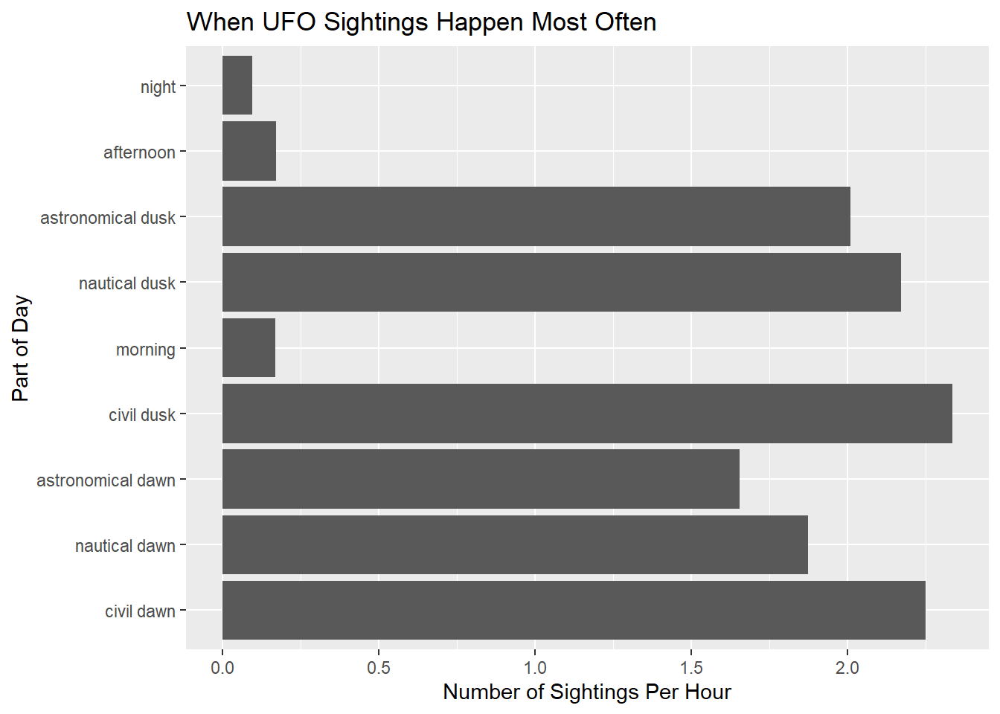

NOTE: This is joint work with Joseph Dee. github can be found at https://github.com/ADC-405-S26/Project_2_SQL_Team_13/tree/main
load packages and connect to database server
Aiden
—————————————————————————
Accessing data
Data was taken from here https://github.com/rfordatascience/tidytuesday/blob/main/data/2023/2023-06-20/readme.md There are three .csv files “ufo_sightings.csv” “places.csv” “day_parts_map.csv” ufo_sightings.csv has city and state in common with places.csv ufo_sightings.csv has reported_date_utc and posted data in common with day_parts_map.csv
Rows: 96429 Columns: 12
── Column specification ────────────────────────────────────────────────────────
Delimiter: ","
chr (7): city, state, country_code, shape, reported_duration, summary, day_...
dbl (1): duration_seconds
lgl (1): has_images
dttm (2): reported_date_time, reported_date_time_utc
date (1): posted_date
ℹ Use `spec()` to retrieve the full column specification for this data.
ℹ Specify the column types or set `show_col_types = FALSE` to quiet this message.
Rows: 14417 Columns: 10
── Column specification ────────────────────────────────────────────────────────
Delimiter: ","
chr (6): city, alternate_city_names, state, country, country_code, timezone
dbl (4): latitude, longitude, population, elevation_m
ℹ Use `spec()` to retrieve the full column specification for this data.
ℹ Specify the column types or set `show_col_types = FALSE` to quiet this message.
Rows: 26409 Columns: 12
── Column specification ────────────────────────────────────────────────────────
Delimiter: ","
dbl (2): rounded_lat, rounded_long
date (1): rounded_date
time (9): astronomical_twilight_begin, nautical_twilight_begin, civil_twilig...
ℹ Use `spec()` to retrieve the full column specification for this data.
ℹ Specify the column types or set `show_col_types = FALSE` to quiet this message.
glimpse(raw_ufo_sightings) #shape has lots of NAs and day_part has some NAs
To get the right times refer here https://duckdb.org/docs/current/sql/data_types/overview column | type | nulls allowed? | default value I am not sure what we should set the default values too so I have not included them at this stage
Currently there is no primary key for this table. I have emailed professor abhishek about what to do. # Aiden
day_parts_map has NAs within “nautical_twilight_begin” and “astronomical_twilight_end”
CREATETABLE day_parts_map ( rounded_lat INTNOTNULL, rounded_long INTNOTNULL, rounded_date DATENOTNULL, astronomical_twilight_begin TIME, nautical_twilight_begin TIME, civil_twilight_begin TIME, sunrise TIME, solar_noon TIME, sunset TIME, civil_twilight_end TIME, nautical_twilight_end TIME, astronomical_twilight_end TIME,PRIMARYKEY (rounded_lat, rounded_long, rounded_date) );
This query examines when UFO sightings happened most often by grouping reports by day_part. This allowed us to compare the number of sightings across categories such as night, afternoon, morning, and different twilight periods.
SELECT day_part, COUNT(*) AS sightingsFROM ufo_sightingsGROUPBY day_partORDERBY sightings DESC;
Displaying records 1 - 10
day_part
sightings
night
47908
afternoon
12443
astronomical dusk
10240
nautical dusk
7532
morning
7454
civil dusk
3408
NA
2527
astronomical dawn
1718
nautical dawn
1313
civil dawn
662
Jeb
The results show that UFO sightings were most commonly reported at night. This suggests that sightings were concentrated during darker conditions, when unusual lights or objects may have been easier to notice. It also shows that time of day was an important part of the reporting pattern in this dataset.
This query compares UFO sightings across U.S. states while adjusting for population. Instead of only counting total sightings, it calculates sightings per million residents, which gives a fairer comparison between large and small states.
WITH state_pop AS (SELECT state, SUM(population) AS popFROM (SELECTDISTINCT city, state, country_code, populationFROM placesWHERE country_code ='US'AND state ISNOTNULLAND population >0 )GROUPBY state),state_sightings AS (SELECT state, COUNT(*) AS sightingsFROM ufo_sightingsWHERE country_code ='US'AND state ISNOTNULLGROUPBY state)SELECT s.state, s.sightings, p.pop, s.sightings *1000000.0/ p.pop AS sightings_per_millionFROM state_sightings sJOIN state_pop pON s.state = p.stateORDERBY sightings_per_million DESC;
Displaying records 1 - 10
state
sightings
pop
sightings_per_million
MT
649
569753
1139.0901
VT
284
271422
1046.3411
WA
4971
5325191
933.4876
ID
890
1014189
877.5485
DE
270
308255
875.8982
OR
2490
2894265
860.3221
WV
516
602582
856.3150
ME
737
865358
851.6706
SC
1499
1812282
827.1340
AK
412
511461
805.5355
The population-adjusted results help identify states where sightings were unusually common relative to the number of people living there. This is more useful than raw totals because larger states naturally tend to have more reports. By adjusting for population, the query highlights states with higher relative reporting rates.
Jeb
This query examines whether reported UFO shapes varied by part of day. By grouping sightings by both day_part and shape, we could compare how different types of sightings appeared across different lighting conditions.
The results show how reported shapes differed across parts of the day. This helps connect what people reported seeing with when they reported seeing it. If certain shapes appeared more often at night or around dusk, that may suggest that lighting conditions affected how sightings were perceived and described.
This query examines whether certain UFO shapes were more likely to include images. For each reported shape, it counts the total number of sightings, counts how many included images, and calculates the percentage of sightings with images. We limited the results to shapes with at least 50 sightings so that very rare categories would not distort the comparison.
SELECT shape,COUNT(*) AS total_sightings,SUM(CASEWHEN has_images THEN1ELSE0END) AS with_images,100.0*SUM(CASEWHEN has_images THEN1ELSE0END) /COUNT(*) AS pct_with_imagesFROM ufo_sightingsWHERE shape ISNOTNULLGROUPBY shapeHAVINGCOUNT(*) >=50ORDERBY pct_with_images DESC;
Displaying records 1 - 10
shape
total_sightings
with_images
pct_with_images
diamond
1363
0
0
chevron
1250
0
0
disk
5237
0
0
fireball
7191
0
0
formation
3367
0
0
cigar
2374
0
0
circle
9294
0
0
triangle
8845
0
0
cone
368
0
0
light
18654
0
0
The results help show whether some UFO shapes were more likely to be visually documented than others. This adds another layer to the analysis because it does not just ask what people saw, but whether certain types of sightings were more likely to be supported by images. This may reflect differences in visibility, duration, or how distinct certain shapes appeared to observers.
This query compares UFO sightings across U.S. states while adjusting for population. Instead of only counting total sightings, it calculates sightings per million residents, which gives a fairer comparison between large and small states.
WITH state_pop AS (SELECT state, SUM(population) AS popFROM (SELECTDISTINCT city, state, country_code, populationFROM placesWHERE country_code ='US'AND state ISNOTNULLAND population >0 )GROUPBY state),state_sightings AS (SELECT state, COUNT(*) AS sightingsFROM ufo_sightingsWHERE country_code ='US'AND state ISNOTNULLGROUPBY state)SELECT s.state, s.sightings, p.pop, s.sightings *1000000.0/ p.pop AS sightings_per_millionFROM state_sightings sJOIN state_pop pON s.state = p.stateORDERBY sightings_per_million DESC;
Displaying records 1 - 10
state
sightings
pop
sightings_per_million
MT
649
569753
1139.0901
VT
284
271422
1046.3411
WA
4971
5325191
933.4876
ID
890
1014189
877.5485
DE
270
308255
875.8982
OR
2490
2894265
860.3221
WV
516
602582
856.3150
ME
737
865358
851.6706
SC
1499
1812282
827.1340
AK
412
511461
805.5355
The population-adjusted results help identify states where sightings were unusually common relative to the number of people living there. This is more useful than raw totals because larger states naturally tend to have more reports. By adjusting for population, the query highlights states with higher relative reporting rates.
Jeb
This query examines whether reported UFO shapes varied by part of day. By grouping sightings by both day_part and shape, we could compare how different types of sightings appeared across different lighting conditions.
The results show how reported shapes differed across parts of the day. This helps connect what people reported seeing with when they reported seeing it. If certain shapes appeared more often at night or around dusk, that may suggest that lighting conditions affected how sightings were perceived and described.
This query examines whether certain UFO shapes were more likely to include images. For each reported shape, it counts the total number of sightings, counts how many included images, and calculates the percentage of sightings with images. We limited the results to shapes with at least 50 sightings so that very rare categories would not distort the comparison.
SELECT shape,COUNT(*) AS total_sightings,SUM(CASEWHEN has_images THEN1ELSE0END) AS with_images,100.0*SUM(CASEWHEN has_images THEN1ELSE0END) /COUNT(*) AS pct_with_imagesFROM ufo_sightingsWHERE shape ISNOTNULLGROUPBY shapeHAVINGCOUNT(*) >=50ORDERBY pct_with_images DESC;
Displaying records 1 - 10
shape
total_sightings
with_images
pct_with_images
cigar
2374
0
0
circle
9294
0
0
triangle
8845
0
0
chevron
1250
0
0
disk
5237
0
0
star
64
0
0
flash
1605
0
0
teardrop
836
0
0
changing
2463
0
0
other
6400
0
0
The results help show whether some UFO shapes were more likely to be visually documented than others. This adds another layer to the analysis because it does not just ask what people saw, but whether certain types of sightings were more likely to be supported by images. This may reflect differences in visibility, duration, or how distinct certain shapes appeared to observers.
—————————————————————————
Creating data visualizations
This visualization examines how UFO sightings changed over time by grouping reports by year. The graph helps show broader reporting trends across the dataset rather than focusing only on one category, location, or time of day.
sightings_by_year <- DBI::dbGetQuery(con_UFO, " SELECT EXTRACT(year FROM reported_date_time) AS year, COUNT(*) AS sightings FROM ufo_sightings WHERE reported_date_time IS NOT NULL GROUP BY year ORDER BY year;")ggplot(sightings_by_year, aes(x = year, y = sightings)) +geom_line() +geom_point() +labs(title ="UFO Sightings Over Time",x ="Year",y ="Number of Sightings" )
This visualization shows how the number of reported UFO sightings changed over time. Sightings remained relatively low and stable for much of the early period, but began to increase sharply starting in the late 1990s and early 2000s. The number of sightings then reached a peak before declining in more recent years. This pattern suggests that reporting behavior or public interest may have changed significantly over time.
This visualization shows when UFO sightings were reported most often by comparing the number of reports across parts of the day. The graph makes it easier to see whether sightings were concentrated during darker periods or spread more evenly across the day.
daypart_counts <-dbGetQuery(con_UFO, " SELECT day_part, COUNT(*) AS sightings FROM ufo_sightings GROUP BY day_part ORDER BY sightings DESC;")ggplot(daypart_counts, aes(x =reorder(day_part, sightings), y = sightings)) +geom_col() +coord_flip() +labs(title ="When UFO Sightings Happen Most Often",x ="Part of Day",y ="Number of Sightings" )
This visualization shows when UFO sightings were reported most often by comparing the number of reports across different parts of the day. Sightings were overwhelmingly concentrated at night, with significantly more reports than any other time period. There were also notable numbers of sightings during the afternoon and dusk periods, while morning and dawn categories were much lower. This pattern suggests that sightings were more likely to be reported in darker conditions, when unusual lights or objects may be easier to observe.
Aiden Below To more accurately display during which parts of the day UFO sightings are commononly spotted we need to normalize the data according to the portion of time “night” “sunset” takes up, we see that night has a ton of obversations, its also much longer than “sunset”. If we round the lat and long values within “places” to match the lat long values within “day_parts_map” we can then get the duration of each event at each location on the date specified within “ufo_sightings” under “reported_date_time_utc” as well as what day_parts_map category it fell under “night” “dusk” etc. I knew it was possible to do this in SQL but I could not get it to work so I explained my thoughts to chatgpt so it would write the actual SQL code for my reasoning. Code below written by ChatGPT (https://chatgpt.com/share/69ea9eed-59d4-83ea-98fd-9de727a5c9f1)
daypart_per_hour <-dbGetQuery(con_UFO, "WITH sighting_rows AS ( SELECT u.day_part, ROUND(p.latitude, -1) AS rounded_lat, ROUND(p.longitude, -1) AS rounded_long, DATE(u.reported_date_time_utc) AS rounded_date FROM ufo_sightings u JOIN places p ON u.city = p.city AND u.state = p.state AND u.country_code = p.country_code WHERE u.day_part IS NOT NULL),counts AS ( SELECT day_part, rounded_lat, rounded_long, rounded_date, COUNT(*) AS sightings FROM sighting_rows GROUP BY day_part, rounded_lat, rounded_long, rounded_date),durations AS ( SELECT rounded_lat, rounded_long, rounded_date, ( CASE WHEN EXTRACT(EPOCH FROM astronomical_twilight_end) < EXTRACT(EPOCH FROM astronomical_twilight_begin) THEN EXTRACT(EPOCH FROM astronomical_twilight_end) + 86400 ELSE EXTRACT(EPOCH FROM astronomical_twilight_end) END - EXTRACT(EPOCH FROM astronomical_twilight_begin) ) / 3600.0 AS night_hours, ( CASE WHEN EXTRACT(EPOCH FROM nautical_twilight_begin) < EXTRACT(EPOCH FROM astronomical_twilight_begin) THEN EXTRACT(EPOCH FROM nautical_twilight_begin) + 86400 ELSE EXTRACT(EPOCH FROM nautical_twilight_begin) END - EXTRACT(EPOCH FROM astronomical_twilight_begin) ) / 3600.0 AS astronomical_dawn_hours, ( CASE WHEN EXTRACT(EPOCH FROM civil_twilight_begin) < EXTRACT(EPOCH FROM nautical_twilight_begin) THEN EXTRACT(EPOCH FROM civil_twilight_begin) + 86400 ELSE EXTRACT(EPOCH FROM civil_twilight_begin) END - EXTRACT(EPOCH FROM nautical_twilight_begin) ) / 3600.0 AS nautical_dawn_hours, ( CASE WHEN EXTRACT(EPOCH FROM sunrise) < EXTRACT(EPOCH FROM civil_twilight_begin) THEN EXTRACT(EPOCH FROM sunrise) + 86400 ELSE EXTRACT(EPOCH FROM sunrise) END - EXTRACT(EPOCH FROM civil_twilight_begin) ) / 3600.0 AS civil_dawn_hours, ( CASE WHEN EXTRACT(EPOCH FROM solar_noon) < EXTRACT(EPOCH FROM sunrise) THEN EXTRACT(EPOCH FROM solar_noon) + 86400 ELSE EXTRACT(EPOCH FROM solar_noon) END - EXTRACT(EPOCH FROM sunrise) ) / 3600.0 AS morning_hours, ( CASE WHEN EXTRACT(EPOCH FROM sunset) < EXTRACT(EPOCH FROM solar_noon) THEN EXTRACT(EPOCH FROM sunset) + 86400 ELSE EXTRACT(EPOCH FROM sunset) END - EXTRACT(EPOCH FROM solar_noon) ) / 3600.0 AS afternoon_hours, ( CASE WHEN EXTRACT(EPOCH FROM civil_twilight_end) < EXTRACT(EPOCH FROM sunset) THEN EXTRACT(EPOCH FROM civil_twilight_end) + 86400 ELSE EXTRACT(EPOCH FROM civil_twilight_end) END - EXTRACT(EPOCH FROM sunset) ) / 3600.0 AS civil_dusk_hours, ( CASE WHEN EXTRACT(EPOCH FROM nautical_twilight_end) < EXTRACT(EPOCH FROM civil_twilight_end) THEN EXTRACT(EPOCH FROM nautical_twilight_end) + 86400 ELSE EXTRACT(EPOCH FROM nautical_twilight_end) END - EXTRACT(EPOCH FROM civil_twilight_end) ) / 3600.0 AS nautical_dusk_hours, ( CASE WHEN EXTRACT(EPOCH FROM astronomical_twilight_end) < EXTRACT(EPOCH FROM nautical_twilight_end) THEN EXTRACT(EPOCH FROM astronomical_twilight_end) + 86400 ELSE EXTRACT(EPOCH FROM astronomical_twilight_end) END - EXTRACT(EPOCH FROM nautical_twilight_end) ) / 3600.0 AS astronomical_dusk_hours FROM day_parts_map),duration_long AS ( SELECT rounded_lat, rounded_long, rounded_date, 'night' AS day_part, night_hours AS hours FROM durations UNION ALL SELECT rounded_lat, rounded_long, rounded_date, 'astronomical dawn', astronomical_dawn_hours FROM durations UNION ALL SELECT rounded_lat, rounded_long, rounded_date, 'nautical dawn', nautical_dawn_hours FROM durations UNION ALL SELECT rounded_lat, rounded_long, rounded_date, 'civil dawn', civil_dawn_hours FROM durations UNION ALL SELECT rounded_lat, rounded_long, rounded_date, 'morning', morning_hours FROM durations UNION ALL SELECT rounded_lat, rounded_long, rounded_date, 'afternoon', afternoon_hours FROM durations UNION ALL SELECT rounded_lat, rounded_long, rounded_date, 'civil dusk', civil_dusk_hours FROM durations UNION ALL SELECT rounded_lat, rounded_long, rounded_date, 'nautical dusk', nautical_dusk_hours FROM durations UNION ALL SELECT rounded_lat, rounded_long, rounded_date, 'astronomical dusk', astronomical_dusk_hours FROM durations)SELECT c.day_part, SUM(c.sightings) AS sightings, SUM(d.hours) AS total_available_hours, SUM(c.sightings) / SUM(d.hours) AS sightings_per_hourFROM counts cJOIN duration_long d ON c.rounded_lat = d.rounded_lat AND c.rounded_long = d.rounded_long AND c.rounded_date = d.rounded_date AND c.day_part = d.day_partGROUP BY c.day_partORDER BY sightings_per_hour DESC;")
ggplot(daypart_per_hour, aes(x =reorder(day_part, sightings), y = sightings_per_hour)) +geom_col() +coord_flip() +labs(title ="When UFO Sightings Happen Most Often",x ="Part of Day",y ="Number of Sightings Per Hour" )

After normalizing for the portion of day that each part of the day occupies we can see that there is a much higher density of detections during dusk and dawn compared to night morning and night. Dusk and Dawn are the worst times for visibility. During dawn and dusk low sun angles create blinding glare, while rapidly changing light levels make it difficult for the human eye to adjust, reducing peripheral vision and depth perception. This likely explains the large number of UFO sightings seen during these times.